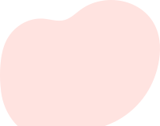

Добрый Клоун
Ежемесячно, на регулярной основе, 2 раза в течение 30 дней профессиональный музыкант – как правило скрипач или арфист – приезжает в школы-интернаты а также в семьи, имеющие ребенка-инвалида, чтобы приобщить детей к миру искусства.
Собрано 530 000 ₽ из 1 000 000 ₽
Помочь